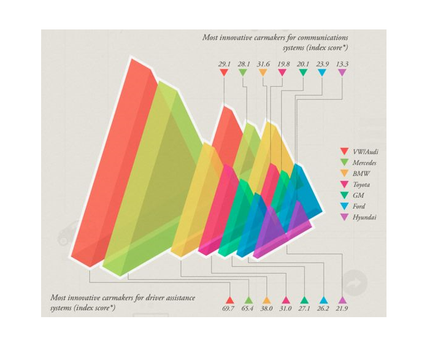

from IPython.core.display import HTML
import pandas as pd
import numpy as np
import matplotlib.pyplot as plt
from IPython.display import Image
from IPython.core.display import HTML
from PIL import Image, ImageOps
import numpy as np
import seaborn as sns
import altair as alt
%matplotlib inline

Any data can be visualize by more then one different ways. Lots of times process will be iterative, looking at data from different angles, finally discovering the view which will be most effective visual.
Charts are perfect for comparing one or many value sets, and they can easily show the low and high values in the data sets. They are great for categorical data, they are widely used and easy to understand.
df = pd.DataFrame([
['Audi', 29.1, 69.7],
['Mercedes', 28.1, 65.4],
['BMW', 31.4, 38.0],
['Toyota', 19.8, 31.0],
['GM', 20.1, 27.1],
['Ford', 23.9, 26.2],
['Hyundai', 13.3, 21.9]
], columns=['Carmaker', 'Communication_Index', 'Driver_Assistanse_Index'])
bar = alt.Chart(df,title=f"Most Innovative Carmakers", width=10, height=600).mark_bar().encode(
x=alt.X('Driver_Assistanse_Index:Q', axis = None),
y=alt.Y('Communication_Index:O', sort=alt.EncodingSortField(field = 'Communication_Index',op = 'sum', order='descending')),
color=alt.Color('Carmaker')
).properties(
width=500,
height=100
)
text = alt.Chart(df).mark_text(dx= 11, dy= 1, color='black').encode(
x=alt.X('Driver_Assistanse_Index:Q'),
y=alt.Y('Communication_Index:O', sort=alt.EncodingSortField(field = 'Communication_Index',op = 'sum', order='descending')),
detail='Carmaker:N',
text=alt.Text('Driver_Assistanse_Index:N', format='.1f')
)
bar + text
In Altair Data sets most commonly provided as pandas DataFrame, and columns would be essential pieces of plotting.
(
alt.Chart(df)
.mark_circle(opacity=0.9)
.encode(x='Driver_Assistanse_Index', y='Communication_Index', color='Carmaker:N', tooltip=['Carmaker', 'Communication_Index','Driver_Assistanse_Index' ])
.interactive()
).properties(
width=500,
height=300,
title='Most Innovative Carmakers'
).configure_axis(
labelFontSize=8,
titleFontSize=12
)